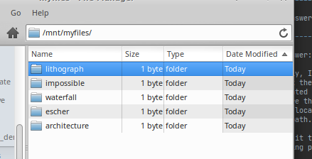

Quickstart¶
Note
This quickstart was performed on Linux, but most instructions should be relatively similar in MacOS, besides a few of the file browser GUI instructions, which you will need to adapt to Finder.
After you’ve installed Supertag, you are ready to start using it. First, let’s mount a new collection:
tag mount myfiles
You should see something like:
Mounting to "/mnt/myfiles"
Forked into background PID 19754
Great, Supertag tells where it mounted your collection and opens that location in a file browser. We can check what collections are available and where they’re mounted with:
tag fstab
Output:
Collections:
* myfiles => /mnt/myfiles
The star in front indicates a primary collection, and because the collection is mounted, we see the path that it is mounted to.
Now let’s start tagging files. First, save this photo of M. C. Escher’s Waterfall. We’ll use it to test out tagging:
Now let’s tag it using our tag binary:
tag ln waterfall.jpg escher/waterfall/architecture
Now let’s browse to /mnt/myfiles and explore what Supertag did. Supertag created 3 new tags—representing
them as directories—and then linked waterfall.jpg into each of those directories:
Click into waterfall. You’ll see the following directories listed:
What’s happening here is Supertag is showing escher and architecture as subdirectories
because there exists at least 1 file (waterfall.jpg) that shares the tag waterfall as well as the
tags escher and architecture. In other words, these directories exist “underneath” waterfall because
they share files with waterfall.
You’ll also notice a funny directory named ⋂. This directory means “the intersection of” (in fact, it is the
math symbol for that concept). Its
contents will be the files of the intersection of the tags in your current path:
Let’s add a couple more tags, but this time, let’s use some of our native system binaries. First let’s create some tagdirs to ensure that we have somewhere to link to:
mkdir -p /mnt/myfiles/lithograph/impossible
Now let’s link our photo with a symlink:
ln -sf waterfall.jpg /mnt/myfiles/lithograph/impossible
This added 2 more tags to our photo:
Note
We could have created our tags separately with individual mkdir commands, and also linked the photo to those two tags with individual ln commands, but I wanted to demonstrate the concept of pinning, as well as applying multiple tags at once.
Now let us remove a file from a single tag. To do this, first browse from the top-level of your collection and
open the tagpath impossible/⋂/. Inside you will see waterfall.jpg. Delete it using your file browser’s
“permanent delete” feature, which is sometimes the shift + delete key:
As expected, the file is untagged from impossible because that is where you deleted the file from. Following this
logic, you may think that you can also untag a file from multiple tags at once, in the same way you can tag a file
with multiple tags at once, but this is not the case—with deletions, Supertag will only remove the last tag in the
tagpath from the file, and it will preserve the other tags.
However, if you wish to remove multiple tags at once, you can use the tag binary:
tag rm /mnt/myfiles/waterfall